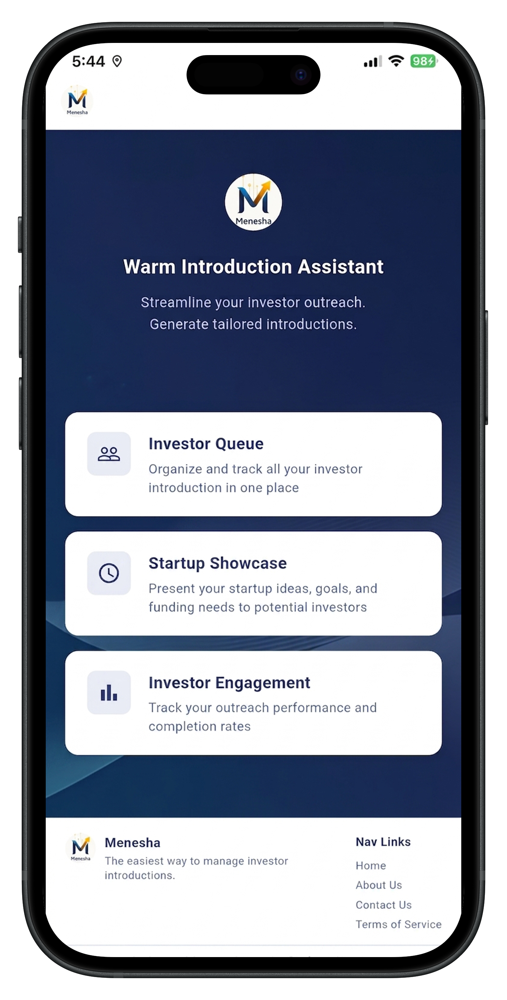
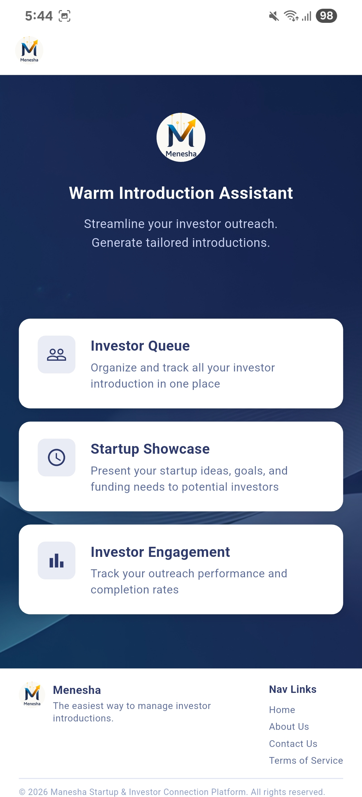
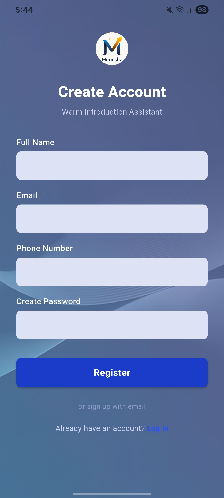
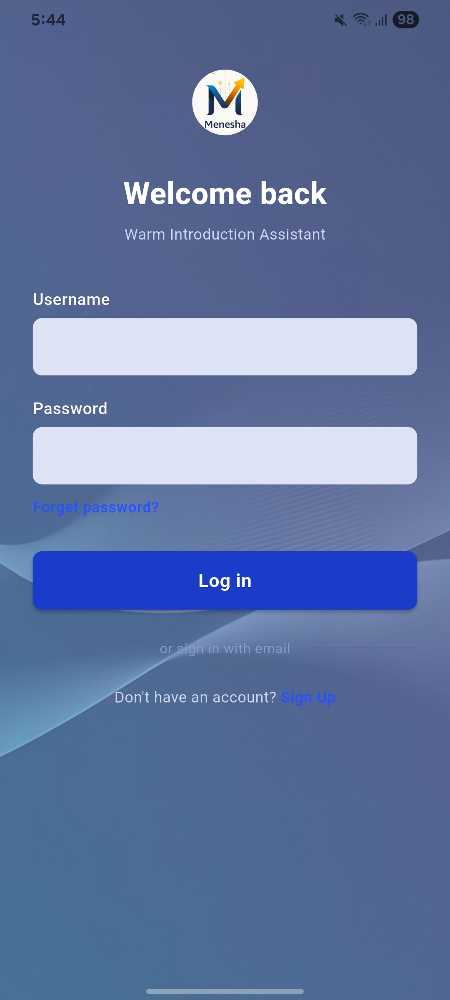
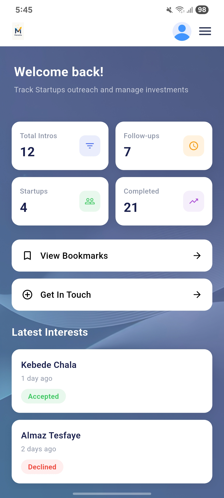
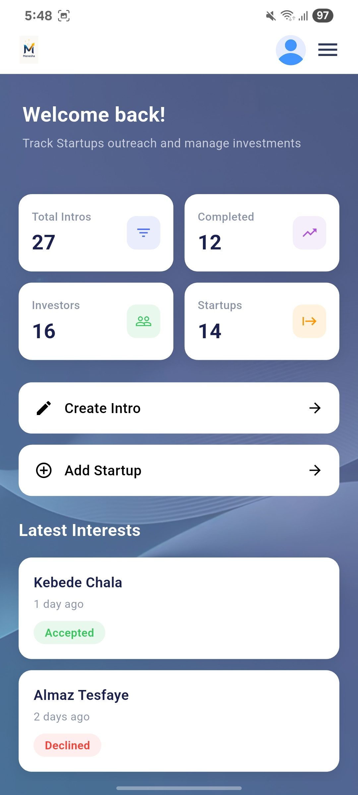
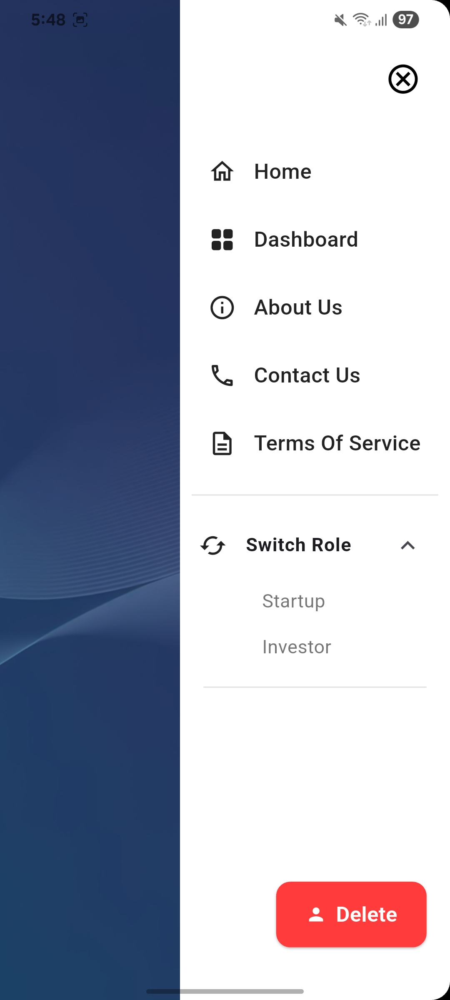
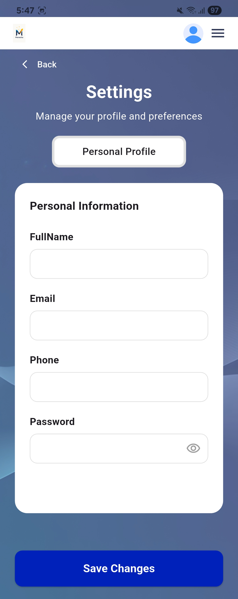
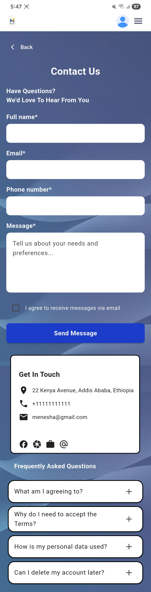
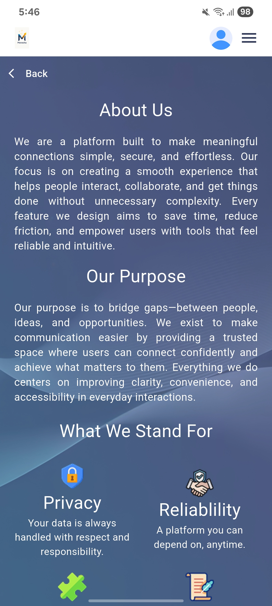

Menesha

Overview:
Menesha is a platform designed to bridge the gap between ambitious startups and prospective investors. Built to streamline discovery, pitch presentations, and strategic networking, it provides entrepreneurs with intuitive tools to showcase their business models, traction, and funding requirements while enabling investors to evaluate vetted opportunities.
Project Screenshots:
Browse through the user interface and core workflows of the platform below. Use the horizontal scroll or arrow controls to explore side-by-side screens:









Technology Stack:
- HTML5 / CSS3
- JavaScript
- Responsive Web Design
- Figma (Prototyping & UI Design)
Features:
- Startup Discovery - Structured catalog and portfolio showcase for emerging ventures
- Investor Portals - Filterable investor matchmaking and opportunity overview
- Pitch Profiles - Rich media pitch decks, financial metrics, and executive summaries
- Direct Inquiry Channels - Streamlined messaging and contact facilitation
Development:
Developed to solve the fragmented communication between local founders and venture capital networks. The interface focuses on clean information hierarchy, intuitive dashboards, and accessible forms to reduce friction in deal sourcing and investor due diligence.
Lessons Learned:
- Architected multi-user workflows balancing the distinct UX requirements of startups and investor personas.
- Structured scalable dashboard components with flexible CSS grid and flexbox layouts.
- Refined typography, data-dense card styling, and component reusability.
- Practiced end-to-end responsive design with accessible touch and keyboard navigation.